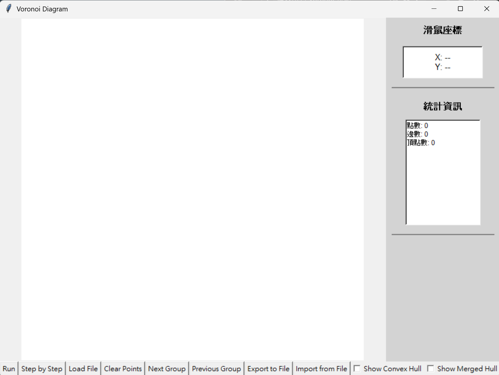
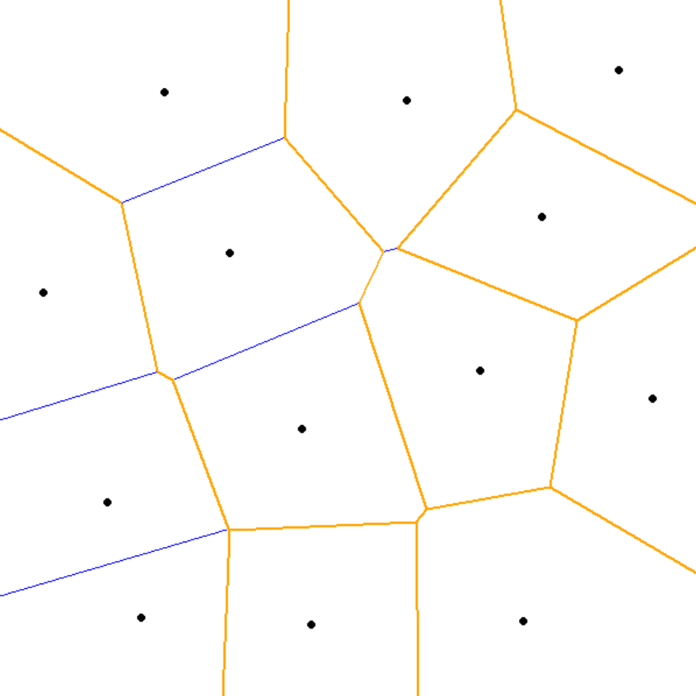
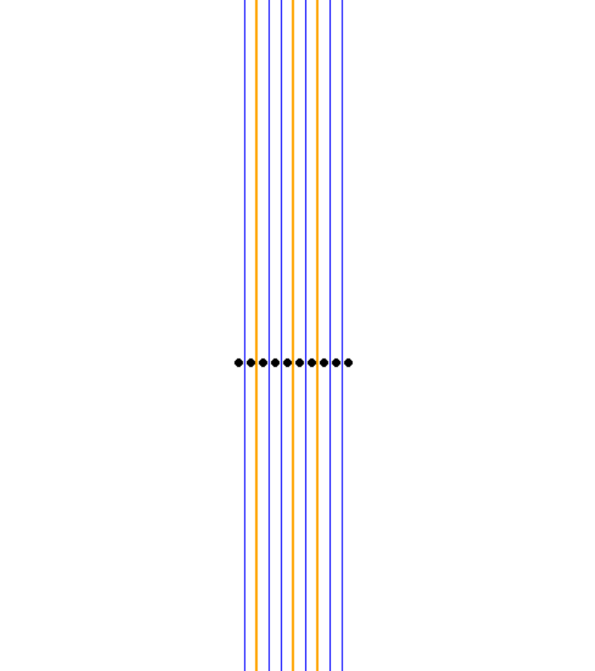
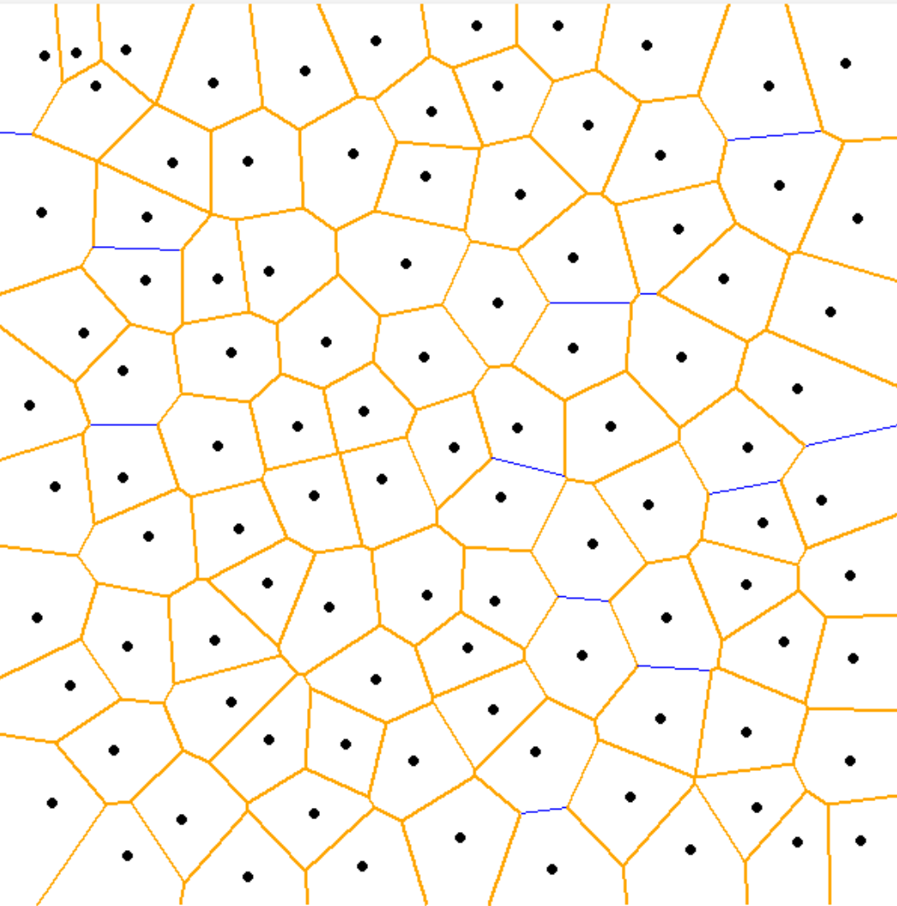

Term Project: Voronoi Diagram Generator
系級： 資訊工程學系 碩一
姓名： 吳少棠 (Wu Shao-Tang)
學號： M143040047
2. 軟體規格書
2.1 輸入/輸出規格
| 項目 | 說明 |
|---|---|
| 輸入方式 1 | 滑鼠點擊：在 GUI 畫布上直接點擊左鍵新增座標點。 |
| 輸入方式 2 | 檔案讀取：支援讀取 .txt 格式文字檔。 |
| 輸入格式 |
# 註解行
3 (點的數量) 100 200 (X Y 座標) 150 250 300 400 |
| 輸出顯示 | GUI 視覺化：繪製 Voronoi 邊界、頂點、原始站點、Convex Hull（可選）。 |
| 輸出檔案 | 支援匯出結果至 .txt，包含點座標 (P) 與邊的線段 (E)。 |
2.2 功能規格
- 核心演算法： 採用 Divide and Conquer 實作 Voronoi Diagram，時間複雜度優於暴力法。
- Step-by-Step 演示： 具備單步執行功能，可視覺化觀察分割 (Divide) 與合併 (Merge) 的過程，包含 Hyperplane 的繪製與修剪。
- Convex Hull 顯示： 支援動態顯示/隱藏 Convex Hull 與 Merged Hull。
- 多組測試： 支援讀取包含多組測試資料的檔案，並可透過 Next/Prev 按鈕切換。
3. 軟體說明
3.1 安裝與執行環境
- 作業系統： Windows 10/11 (已在 Windows 環境下測試)
- 程式語言： Python 3.9+
- 必要套件： 均為 Python 標準函式庫 (tkinter, math, copy, dataclasses, typing, enum)。無需額外 pip install。
3.2 執行方式
請直接點擊資料夾中的 run.bat 檔案即可啟動程式。若無法執行，請確認電腦已安裝 Python 並設定好環境變數，或使用命令提示字元輸入 python hello.py。
3.3 操作介面說明

圖 3-1：軟體主視窗介面
- Run： 直接執行並計算最終的 Voronoi 圖結果。
- Step by Step： 進入演示模式，逐步顯示遞迴與合併的過程。
- Load File： 讀取測試資料檔。
- Clear Points： 清空畫布與數據。
- Next/Prev Group： 若檔案包含多組數據，可切換測試組別。
- Show Convex Hull： 勾選後顯示計算過程中的凸包。
4. 程式設計
4.1 資料結構設計 (datastructer.py)
本程式採用物件導向設計 (OOP) 來管理幾何物件，主要定義於 datastructer.py 中：
VoronoiSite (Point)：代表輸入的原始站點，包含座標資訊。VoronoiEdge：代表 Voronoi 邊（中垂線）。包含數學參數（斜率、截距、法向量參數），並標記是否為 Hyperplane。特別設計了intersect_with方法來計算交點。VoronoiVertex：代表邊的交點或外心。ConvexHull：用於儲存子集點的凸包，輔助合併過程中的切線尋找。MergeStep：用於記錄演算法每一步的狀態（左右子集、Hyperplane、截斷結果），支援 Step-by-Step 回放功能。
4.2 演算法設計 (Divide and Conquer)
演算法核心位於 hello.py 的 compute_voronoi_divide_conquer 方法中。主要流程如下：
- Divide (分割)： 將點集依 X 座標排序，遞迴分割直到剩下 1~3 個點。
- Base Case (基本情況)：
- 2 點：直接建立兩點的中垂線。
- 3 點：判斷是否共線。若不共線，計算外心並建立三條射線；若為鈍角三角形，進行特殊截斷處理。
- Merge (合併)：
- 利用 Walking Algorithm 在兩個子凸包間尋找上切線 (Upper Tangent)。
- 計算初始 Hyperplane (兩子集最近點的中垂線)。
- Hyperplane 追蹤： 由上而下繪製 Hyperplane，檢測其與現有 Voronoi 邊的交點。
- 截斷與清理： 根據交點截斷舊有的邊，並剔除位於 Hyperplane 錯誤一側的線段 (Remove Orphaned Edges)。此處使用了迭代式清理邏輯以確保完全移除孤立邊。
4.3 關鍵技巧與改良
- 擴大計算邊界： 為了避免圖形邊緣的交點計算遺失，將
CALC_MARGIN設定為 20000，確保運算範圍遠大於畫布，最後再裁切顯示，大幅提升準確度。 - 強健的幾何判斷： 在
compute_hyperplane_points中加入了 Y 軸判斷邏輯，避免在垂直分佈的點集中找錯切線起點。同時強制修正 Hyperplane 的繪製方向必須向下 (Y 增加方向)。 - 迭代式孤立邊清除： 改良了
remove_orphaned_edges，使用while True迴圈直到沒有邊被移除為止，解決了連鎖孤立邊未被清除乾淨的問題。
5. 軟體測試與實驗結果
5.1 測試環境
- CPU： AMD Ryzen 7 8845HS
- RAM： 16GB
- OS： Windows 11 64-bit
- Python 版本： 3.13
5.2 測試案例與結果
案例一：基本隨機點
輸入：隨機 13 個點。

圖 5-1：一般隨機分佈點的 Voronoi 圖
案例二：共線測試
輸入：水平或垂直共線的點。

圖 5-2：共線點的處理結果（平行線）
案例三：大量點測試 (極限測試)
輸入：100 個以上的隨機點。

圖 5-3：大量點的複雜圖形與凸包顯示
5.3 遇到的問題與解決
在開發初期，發現當點數較多時，Hyperplane 偶爾會切錯方向或殘留線段。經分析後發現：
- Hyperplane 方向錯誤： 在計算初始法向量時未強制 Y 軸向下，導致從錯誤方向切入。已在 Step 3b 加入方向修正邏輯解決。
- 孤立邊殘留： 原始的遞迴清除邏輯只檢查一次，無法處理連鎖反應。改為迭代式檢查後，成功清除了所有無效邊。
- 計算範圍不足： 擴大
CALC_MARGIN至 20000 像素，解決了遠處交點被視為平行的問題。
6. 結論與心得
透過本次 Term Project，我深入理解了 Voronoi Diagram 的幾何性質以及 Divide and Conquer 演算法的實作細節。相比於 O(N^2) 的暴力法，Divide and Conquer 雖然實作難度極高（特別是在 Merge 階段的 Hyperplane 追蹤與線段修剪），但效率顯著提升。
在實作過程中，處理幾何運算的浮點數誤差以及邊界條件（如共線、鈍角三角形外心在極遠處）是最具挑戰性的部分。透過引入嚴謹的資料結構設計與視覺化的 Step-by-Step 除錯功能，我成功克服了這些困難。這不僅是一個演算法作業，更讓我學習到如何設計一個完整的軟體系統。
7. 附錄
以下檔案已包含於繳交的壓縮檔中：